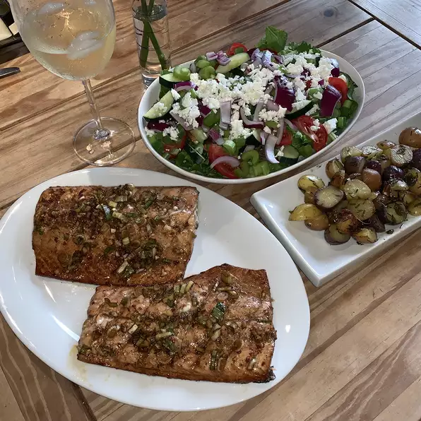

Slammin Salmon

Description
An amazing culinary delight. Hands down the greatest grilled salmon ever. Easy and delicious.
Ingredients
- ¼ cup balsamic vinegar
- ¼ cup lemon juice
- ¼ cup soy sauce
- 1 teaspoon salt
- 1 tablespoon brown sugar
- 1 ½ teaspoons ground ginger
- 1 teaspoon paprika
- 1 teaspoon black pepper
- 1 teaspoon crushed red pepper flakes
- 4 cloves garlic, minced
- ¼ cup chopped green onions
- 1 teaspoon sesame oil
- ½ cup peanut oil
- 8 (4 ounce) skinless, boneless salmon fillets
- Stir balsamic vinegar, lemon juice, and soy sauce with salt, brown sugar, ground ginger, paprika, pepper, and red pepper flakes until the salt has dissolved. Stir in garlic, green onions, sesame oil, and peanut oil until well combined.
- Pour marinade into a resealable plastic bag or glass bowl. Add salmon to marinade and gently toss to coat. Place into refrigerator and marinate 2 to 24 hours.
- Prepare an outdoor grill for medium-high heat.
- Drain excess marinade from salmon fillets. Grill until firm and opaque, about 4 minutes per side.